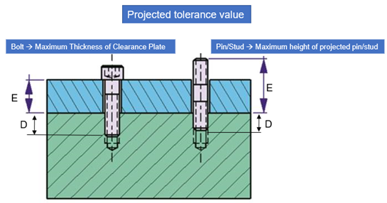
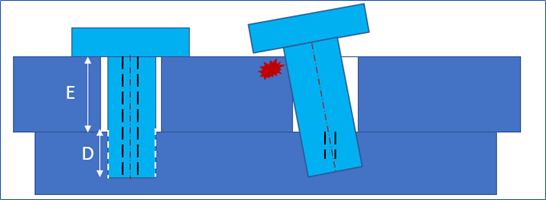
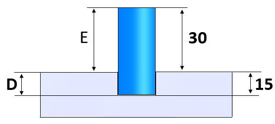
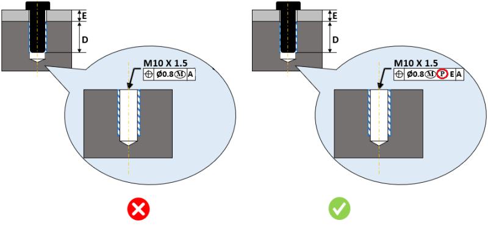
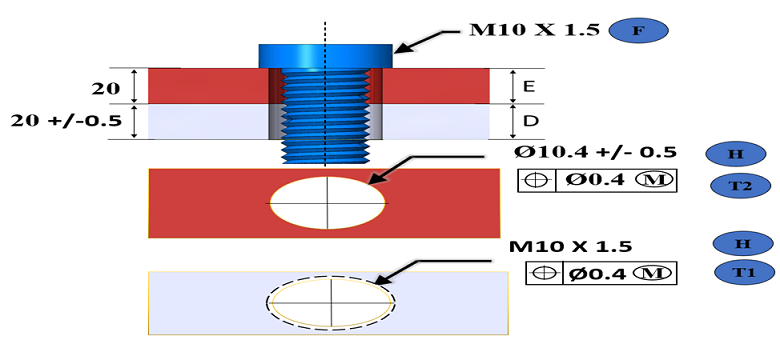
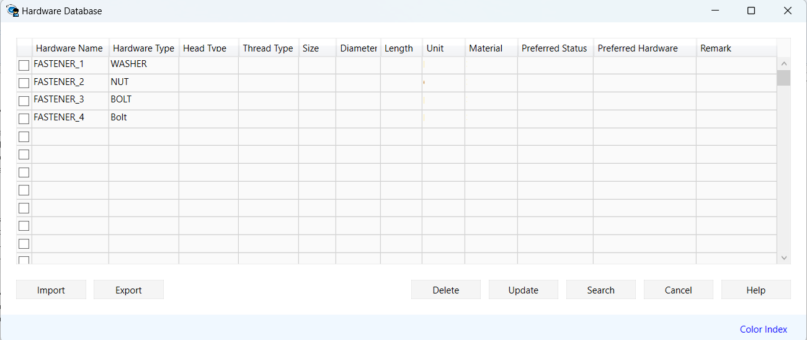

位置拘束留め具組立の場合、（E>D）すなわち留め具の突出部の長さが、ねじ穴内における留め具のかかり深さ（拘束される留め具を含む部品の最小肉厚）よりも大きい場合、本ルールは投影公差修飾子記号Ⓟの有無およびその値をチェックします。
場合によっては、穴に対する位置公差だけでは正しい組立を達成できないことがあります。その結果、ボルトがクリアランス穴を持つプレートと干渉する状態になる可能性があります。
投影公差修飾子は、公差域を部品の上方へ投影します。投影公差の値は、公差域として投影しなければならない高さの差を指定します。この値は、留め具の突出部が、ねじ穴内での留め具のかかり深さ（拘束される留め具を含む部品の最小肉厚）よりも大きい場合に追加されます。
ピン／スタッド組立の場合、この値は投影されたピン／スタッドの最大高さとなります。
投影公差修飾子の値：
投影公差修飾子の値は、ボルト締結組立においてクリアランス穴を含む部品の最大肉厚となります。
ピンおよびスタッド接合の場合、この値は投影されたピン／スタッドの最大高さとなります。

投影公差が定義されていない場合、ボルト／ダウエルと上側プレートの穴との間で干渉が発生する可能性があります。

E = プレート表面上における留め具の最大突出量
D = 留め具とねじ穴との最小かかり長さ
位置拘束留め具組立（ボルト接合、スタッド／ピン接合、圧入組立など）の場合、E>D の条件では投影公差修飾子記号Ⓟを追加してください。
推奨例：

投影されたピン／スタッドの最大高さ（E）＝ 30.0 mm
留め具とねじ穴との最小かかり長さ（D）＝ 15.0 mm
投影公差修飾子記号Ⓟ：
実際の値 ＝ 記号Ⓟは存在するが、値が未入力
推奨値 ＝ 30.0 mm（記号Ⓟと値を指定してください）

P = 投影公差修飾子記号
E = 投影公差修飾子の値
クリアランス穴プレート厚さ（E）に対する公差値が未入力の場合、本ルールはアラートとして検出します。
プレート表面上における留め具の最大突出量（E）＝ 20.0 mm
留め具とねじ穴との最小かかり長さ（D）＝ 19.5 mm
値（E）に対する公差値が未入力

注記:
本ルールは、トップレベルアセンブリ部品に対して、DFMPro 設定に基づいて実行できます。
本チェックを正しく実行するためには、アセンブリ内のボルト、ピン、スタッド、ワッシャ、ナットを識別するために、ハードウェア名およびハードウェアタイプ情報の入力が必須です。ハードウェアの設定については、ハードウェアデータベースを参照してください。
